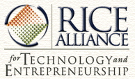

|
San Francisco Bay Area Rice Alumni Group |
|
|
News
|
 Technology Innovation Forum (see Rice Webcast for Streaming of Event) OCTOBER 6 -- A Technology Innovation Forum will be held in Duncan Hall from 9 a.m. to 1:30 p.m. this Saturday, October 6. Keynote speakers for the event will be Steve Sheafor and Cindy Lindsay, from Vitesse Semiconductor Corp. The event is co-hosted by TiE Houston, who will add to the slate of presenters from their ranks. If you have not signed up yet for this event, go to http://www.alliance.rice.edu/users/ and click on the appropriate link. The agenda for this event will be posted soon at http://www.alliance.rice.edu/calendar/.Registration will open at 8:00 AM, when a continental breakfast will be served. A box lunch will be available at noon, followed by break-out sessions with the presenters. This is the first event of the year in our "season ticket" package for members; to learn more about membership, go to http://www.alliance.rice.edu/membership. Admission per event for non-members is $35.00. A map for this event is available at http://dacnet.rice.edu/maps/space/ (At the bottom of the map, under "Locate a Building or Parking Lot... ," you should hi-light Duncan Hall.) (NOTE: We hope to stream this forum, for interested parties around the country. Watch for a link to be posted at http://www.rice.edu/rtv later in the week!)
A New Rice University Center
Date & Time Wednesday, April 4, 2001 @ 6:00 PM
Speaker Steven C. Currall, PhD. (alliance@rice.edu), Director of Rice Alliance for Technology and Entrepreneurship, Associate Professor of Management and Psychology Dr. Steven Currall has a vision. It is a vision of synergy between technological and entrepreneurial resources in the Rice community and a vision of local prosperity through successful commercialization of technological innovation. Dr. Currall, Associate Professor of Management and Psychology at Rice, is the Founding Director of the Rice Alliance for Technology and Entrepreneurship, a joint effort between Rice’s engineering, natural sciences, and management schools. On April 4, Dr. Currall presented the mission and activities of the Rice Alliance to about 80 Rice alumni from the Bay Area. The purpose of the Rice Alliance is to promote entrepreneurial ventures stemming from Rice’s technically talented students, faculty, staff and alumni. By connecting presenters with Rice Alliance members who are entrepreneurs, mentors, or investors, the Alliance assists potential entrepreneurs in their journey toward commercialization. The Alliance takes these ventures from initial conception to full-blown business plan, representing a crucial phase in a technology venture’s development. Rice community members can become involved not only as budding entrepreneurs, but also as mentors and collaborators. Mentors make themselves available on a volunteer basis to business plan presenters, mostly through contact at Rice Alliance forum and networking events, while collaborators can add value as new team members. The Business Plan Presentation Forum (held annually each spring) is also attended by angel investors, commercial bankers, and venture capitalists from the financial community at large. At present, the Rice Alliance sponsors several Forum events yearly, at which innovators present their ideas to an audience of potential collaborators, mentors, and investors, along with Panel Discussion leaders from the business community. These individuals help presenters assess the commercial potential of their ideas. Follow-up occurs at Networking events, when presenters and Alliance members hear a brief educational presentation and then given time to mix and mingle. So far, the events have been held exclusively in the Houston area; but the Alliance recognizes that Rice has substantial resources – especially in the technology community – located in other parts of the country. The Bay Area, with 1600 estimated Rice alumni, is only second to Austin (which has about 1800 Rice alumni) outside of the Houston area. After Dr. Currall described the Rice Alliance’s mission and activities, the Rice alumni present at the event brainstormed about how we might contribute to this exciting initiative. Suggestions included repeating or simulcasting forum presentations in person or via teleconferencing, in order to connect potential innovators with the Bay Area community. A more formal mentor directory was also mentioned as a future goal. Though I knew few people at the event personally, the audience response was generally extremely positive. Attendees who had assessed the status of the Alliance one year ago were effusive about its progress. For example, one alum I met had recently pitched his software concept at an Alliance networking forum in Houston, with good reports, and another (whose software startup fizzled out in October) commented, “I wish I had had this [resource] when I was starting my company last year.” The Rice Alliance is acting as an important catalyst for potential innovators and business people. Alumni can get involved in the Rice Alliance in a variety of ways. Check out the Rice Alliance website (www.alliance.rice.edu) to discover the numerous ways that you can contribute to technology and entrepreneurship at Rice and in the larger community. Marisa Jennings, Class of ’00
|